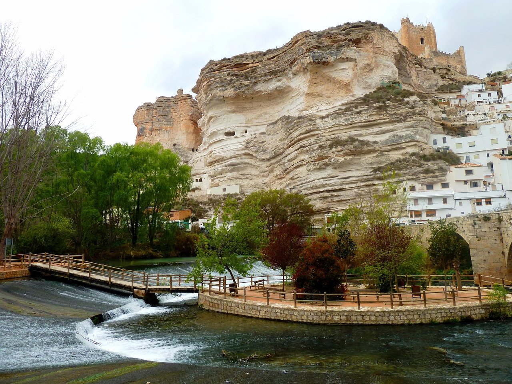
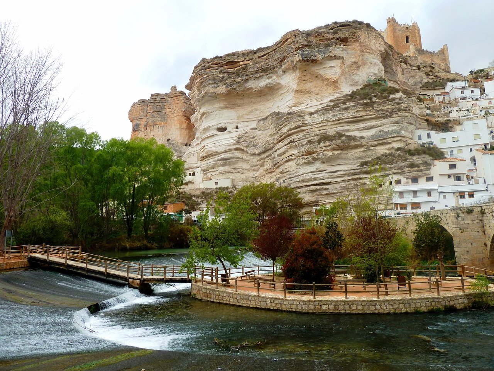
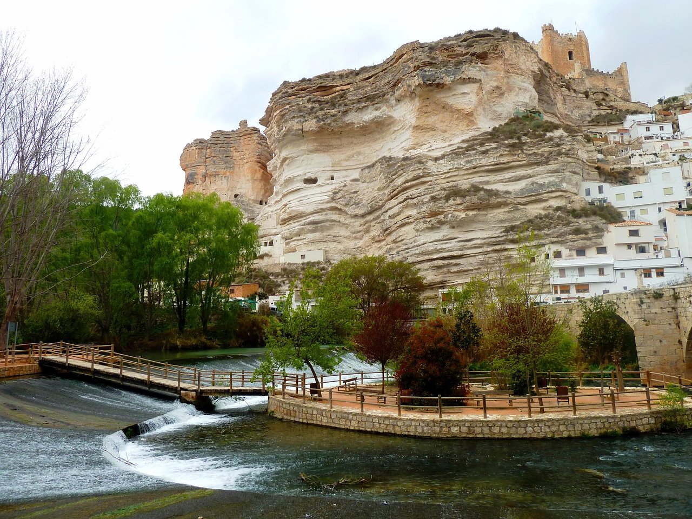

Hoces del Rio Jucar

Información
Descripcion
Son un impresionante desfiladero tallado por las aguas del río a lo largo de unos 25 kilómetros. Con paredes rocosas imponentes y vistas panorámicas espectaculares, este enclave ofrece un paisaje dramático y naturalmente hermoso. Ideal para senderismo, las rutas permiten explorar la diversidad geológica y disfrutar de la flora y fauna autóctonas. Popular entre los amantes de la escalada, estas paredes de piedra caliza ofrecen emocionantes desafíos. En resumen, las Hoces del Río Júcar son una joya natural que cautiva con su belleza salvaje y su oferta de actividades al aire libre.